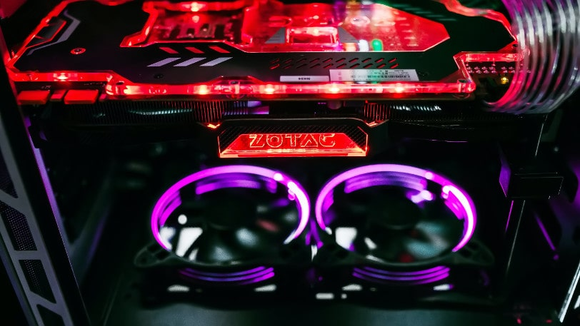

Gaming World
NA CO PATRZEĆ PODCZAS WYBORU KARTY
POWRÓT
Najprostszym kryterium wybory karty graficznej dla graczy jest oczywiście cena. Można z dużą dozą prawdopodobieństwa stwierdzić, że im droższa karta, tym będzie bardziej wydajna.
Diabeł jak zawsze tkwi jednak w szczegółach, dlatego warto zwrócić uwagę na specyfikację techniczną, która wskaże nam faktyczne możliwości danego układu i umożliwi świadomy zakup najlepszej karty gamingowej.
- Typ procesora graficznego – decyduje o wydajności danej karty. Obecnie dobra karta graficzna dla gracza będzie wyposażona w chipset Nvidia Geforce GTX, Nvidia Geforce RTX lub AMD Radeon RX
Taktowanie rdzenia – podawane są dwa parametry – bazowe i maksymalne (Boost). Im wyższe tym lepiej
- Ilość pamięci RAM – o zapotrzebowaniu na ilość pamięci decyduje konkretna gra. Można przyjąć zasadę, że do rozdzielczości Full HD minimum to 4 GB, do QHD 6 GB, a do rozdzielczości 4K Ultra HD najlepiej wybierać karty z 8 GB pamięci (najwydajniejsze karty mają nawet 11 GB)
- Rodzaj pamięci RAM – najlepszym wyborem będą karty graficzne z pamięcią GDDR5 i GDDR6
- Możliwość podkręcania (OC) – karty oznaczone OC pozwalają na zwiększanie taktowania chipsetu oraz pamięci RAM, co umożliwia zwiększenie wydajności karty. Jest to opcja przeznaczona dla zaawansowanych użytkowników, gdyż może wpływać na stabilność pracy komputera
- Złącza – najczęściej stosowane obecnie złącza to HDMI oraz DisplayPort, chociaż można także znaleźć karty ze złączem DVI. Im więcej złączy, tym więcej monitorów możemy podłączyć jednocześnie
- Złącza zasilania – za ich pomocą podłączamy kartę do zasilacza, dlatego trzeba się upewnić, że zasilacz ma ich odpowiednią ilość i typ. Stosowane obecnie wtyczki to: 6-pin, 8-pin lub 2x 8-pin. Nowe karty graficzne Nvidia RTX 3000 wprowadziły nowy standard zasilania 12-pin (jest on stosowany w modelach referencyjnych)
- Wymiary karty – trzeba na nie zwrócić uwagę, gdy szukamy karty do komputera w mniejszej obudowie, w przeciwnym razie może ona po prostu fizycznie się nie zmieścić do środka
- Podświetlenie – karty do gier często wyposażone są w podświetlenie RGB, które nie ma wpływu na wydajność karty, ale za to efektownie się prezentuje w obudowie komputera.
- DLSS / FidelityFX – funkcja odpowiadająca za obniżanie rozdzielczości połączonej z algorytmem wyostrzania obrazu, co przekłada się na płynniejszą animację przy zachowaniu jakości obrazu
- Ray tracing – technologia śledzenia promieni, odpowiadająca za bardzo realistyczne efekty świetlne w grach (obsługiwana przez karty Nvidia GeForce RTX oraz najnowsze karty AMD Radeon RX 6000).
KWESTIA CHŁODZENIA
Kolejną dość znaczącą cechą – dla niektórych graczy – może być typ chłodzenia i jego głośność
Karty mogą oferować rozwiązania standardowe lub autorskie z efektywniejszym odprowadzaniem ciepła. Najbardziej wydajne karty są wyposażone w dwa lub nawet trzy wentylatory.
Interesującym rozwiązaniem jest tzw. półpasywne chłodzenie. Karta graficzna wyposażona jest w radiator oraz wentylatory. Przy małym obciążeniu podzespołów te ostatnie nie muszą się uruchamiać, gdyż ciepło jest odprowadzane za pomocą radiatora. To przekłada się na znacznie cichszą pracę. Wentylatory są włączane dopiero po osiągnięciu określonej temperatury.
TECHNOLOGIA ŁĄCZENIA KART- SLI I CROSSFIRE
Najbardziej wymagający gracze mogą zainteresować się technologią SLI (Nvidia) i Crossfire (AMD), pozwalające łączyć kilka kart, dzięki czemu do dyspozycji otrzymamy jeszcze więcej mocy. Warto jednak zauważyć, że funkcje nie zawsze działają w idealny sposób. W niektórych tytułach dołożenie kolejnej karty przełoży się na dwukrotnie lepszą wydajność, ale w innych wzrost wydajności będzie niewielki lub nie odczujemy w ogóle. Producenci powoli odchodzą od takiego rozwiązania.
